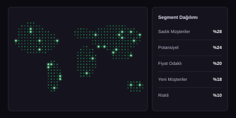
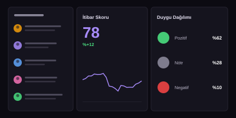
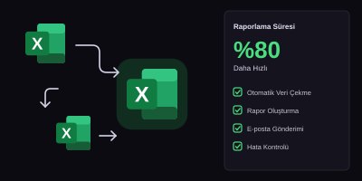
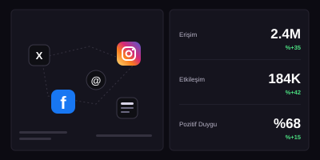
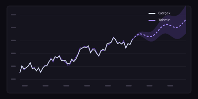
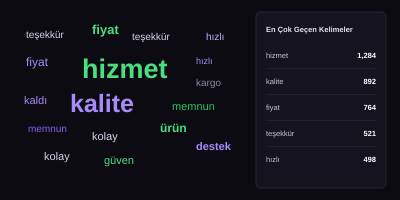

Sosyal Medya
Sosyal Medya
Sosyal Medya Sentiment Analizi
Marka konuşmalarını analiz ederek duygu dağılımı, ana konular ve aksiyon alınabilir içgörüler çıkardım.
- Python
- Brandwatch
- Power BI
- NLP
Veri analizi, sosyal medya dinleme, raporlama ve otomasyon alanlarında gerçekleştirdiğim projelerden bazılarını burada bulabilirsiniz. Her proje, veriyi anlamlı içgörülere dönüştürme hedefimin bir parçası.
Veriyi görmek bir başlangıçtır,
ondan anlam çıkarmak ise asıl yolculuktur.
Sosyal Medya
Marka konuşmalarını analiz ederek duygu dağılımı, ana konular ve aksiyon alınabilir içgörüler çıkardım.
 Veri Görselleştirme
Veri Görselleştirme
Üst yönetime yönelik, interaktif ve dinamik raporlama çözümü tasarladım. KPI takibi ve trend analizleri sağladım.
 Veri Analizi
Veri Analizi
Gerçek bir veri seti üzerinde uçtan uca veri temizleme, keşifsel analiz ve modelleme süreci gerçekleştirdim.

CRM & Müşteri AnalitiğiMüşteri davranışlarını analiz ederek segmentasyon çalışması gerçekleştirdim. Hedef kitlelere özel stratejiler önerdim.

Sosyal MedyaMarkaların dijital itibarı için risk ve fırsatları belirleyen kapsamlı analiz raporları hazırladım.

OtomasyonTekrarlayan raporlama süreçlerini otomatikleştiren Excel makroları geliştirdim. Zaman tasarrufu ve hata oranında azalma sağladım.

Sosyal MedyaKampanya dönemlerindeki konuşmaları analiz ederek etki ölçümü ve kanal bazlı performans raporları hazırladım.

Veri AnaliziZaman serisi analizi ile gelecekteki talebi tahmin eden bir model geliştirdim. İş kararları için senaryo analizleri sundum.

Sosyal MedyaMüşteri yorumlarını doğal dil işleme (NLP) teknikleri ile analiz ederek temel temaları ve duygu dağılımlarını belirledim.
Aramanıza uygun proje bulunamadı.
Benzer bir proje üzerinde çalışmak veya kendi veri ihtiyaçlarınız için konuşmak isterseniz, benimle iletişime geçebilirsiniz.
Benimle İletişime GeçDoğru veri,
daha iyi kararlar,
daha parlak yarınlar.